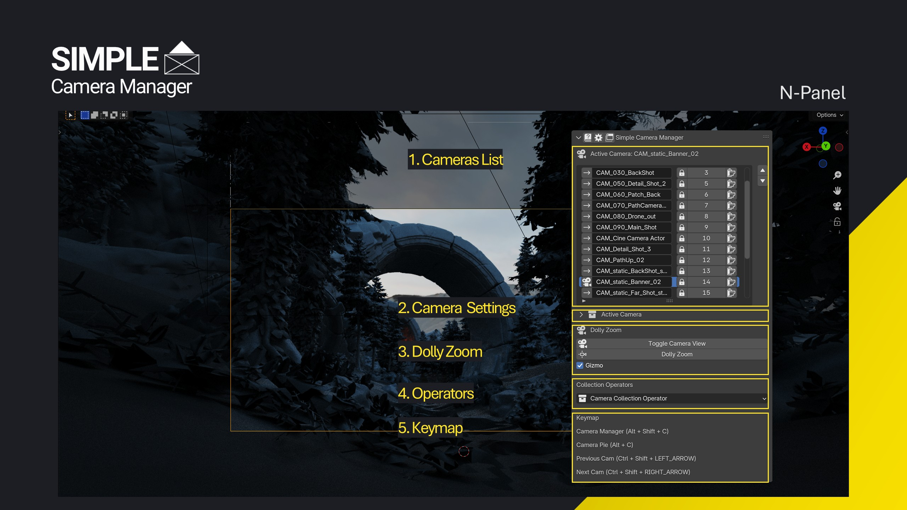
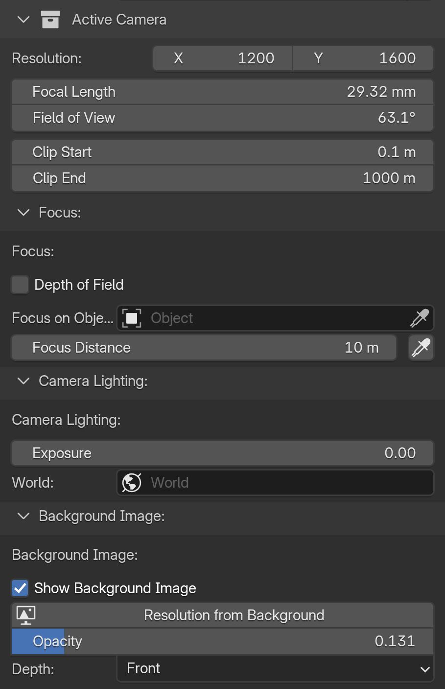
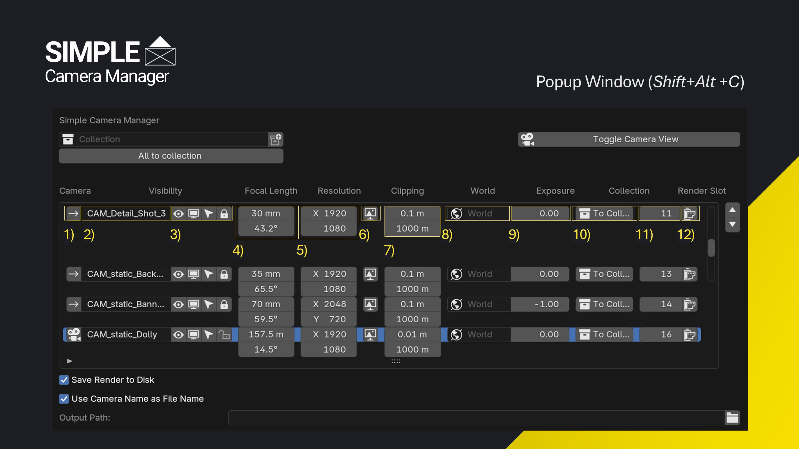
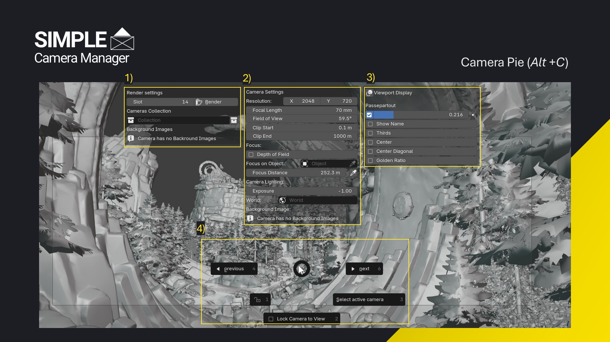
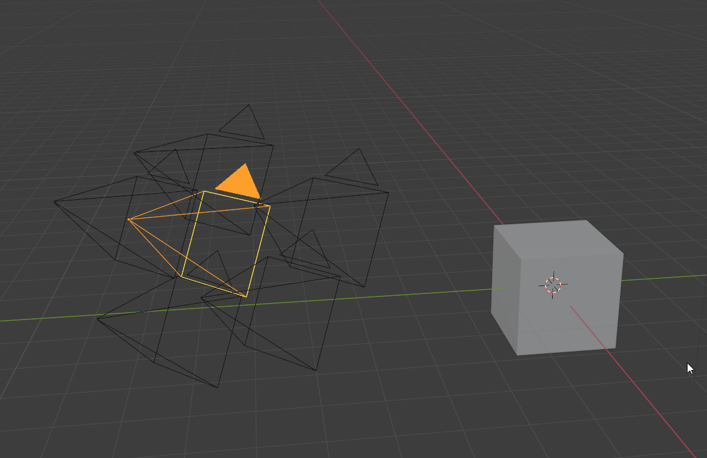

The UI
The N Panel

- Camera List Containing a list of the scene cameras. Allowing the user to select them for batch rendering, renaming, assigning render slots and directly render them.
- Active Camera Contains camera specific settins like Resolution, focal length, focus distance and custom camera lighting and background images.
- Dolly Zoom Start the dolly zoom and show/hide the dolly zoom gizmo.
- Camera Operators Contains some additional operatros like creating a camera from the current view.
- Keymap Show the current keymap assignment.

The Active Camera panel in the N-Panel contains all camera specific settings.
Overview Panel (Shift + C)
The Overview Panel is the core of the addon. The menu lists all cameras in your scene. It provides a quick overview of the most important settings and an easy way to adjusting them. Additionally, you can assign camera-specific resolution, render slots, and world materials, exceeding the posibilities of the default Blender.
The Overview panel contains all cameras and most relevant camera settings in your scene.

- Toggle the active camera
- Rename cameras
- Toggle visibility, selection, and locking
- Adjust specific settings like focal length or Field of View
- Change output resolution per camera
- Apply camera resolution from the assigned background image
- Adjust the near and far clipping distance of the camera.
- Set the world material (e.g., HDRI) per camera to adjust the light condition
- Set exposure value per camera
- Move camera to the specified camera collection
- Assing individual render slots per camera
- Render any camera directly from this menu
Active Camera Pie (Alt + C)
This pie menu is intended to tweak the currently active camera. It is split into 4 areas.

- Background Image and Render Settings: Assign a render slot and render directly from the pie menu. Further, this area contains functionalities to adjust the visibility of background images and toggle them on/off quickly.
- Camera Settings: Tweak camera-specific values like focal length, exposure, clipping planes, and depth of field.
- Viewport Settings: Quickly show and hide composition guides, UI elements and darken the area outside the final frame.
- Quick Access Tools: Quickly toggle between cameras, lock/unlock, select or lock the current camera to view.
Toggle Cameras (Ctrl + Shift + Left/Right Arrow)
Ctrl + Shift + Left/Right Arrow allows you to quickly toggle between the scene cameras. All camera-specific settings like resolution and world material will automatically be applied. The hotkeys can be changed in the addon preferences.
Warning
All camera-specific settings - provided by this addon - like world material, exposure, camera resolution and render slot will not be updated when changing the active camera in the scene properties manually. Use the hotkeys and buttons provided by the addon to switch the cameras.

Camera toggle using hotkeys: The resolution is stored for each camera. The cameras can be toggled both from the viewport - as seen here - or while looking through the camera.

Camera toggle using the scene properties panel
Preferences
The preferences provide easy customization.